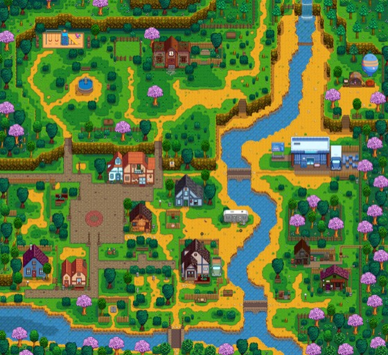

O hře
Stardew Valley vyšla v únoru 2016 a z malé nezávislé hry se postupně stala jedna z nejoblíbenějších her vůbec. Mě na tom ale nejvíc fascinuje, kdo za ní vlastně stojí.
Jak hra vznikla

Za celou hrou stojí jediný člověk, americký vývojář Eric Barone, kterého spousta hráčů zná spíš pod přezdívkou ConcernedApe. Na hře pracoval zhruba čtyři a půl roku úplně sám, takže ji nejen naprogramoval, ale nakreslil i veškerou grafiku, složil hudbu a napsal všechny dialogy. Když si představím, kolik práce to muselo být, vůbec se nedivím, že to trvalo tak dlouho.
Inspirací mu byla starší japonská série Harvest Moon, kterou měl sám rád, a chtěl z ní udělat vlastní a vylepšenou verzi. Hra nejdřív vyšla jen pro počítače a až později se dostala i na konzole a mobilní telefony.
O čem hra je
Vaše postava pracuje v kanceláři velké korporace Joja a práce ji už vůbec nebaví. Jednoho dne otevře dopis od zesnulého dědečka, který jí odkázal svou farmu ve Stardew Valley. A tak se rozhodne všeho nechat, odejít z města a začít úplně od začátku.
Jenže farma je zarostlá kamením, pařezy a plevelem a ani městečko Pelican Town na tom není zrovna nejlépe. Jestli pomůžete místní komunitě, nebo se dáte na stranu korporace Joja, je už jen na vás.
Co všechno se dá dělat
- Farmaření: sázení, zalévání a sklizeň plodin, každé roční období má své vlastní.
- Chov zvířat: slepice, krávy, kozy, ovce, prasata a další, o které se musíte starat.
- Rybaření: v řece, jezeře i v moři a každá ryba se chytá trochu jinak.
- Doly: těžba rud a drahokamů a k tomu boj s příšerami.
- Vztahy: přátelství s obyvateli, randění a nakonec třeba i svatba.
- Festivaly: v každém ročním období se slaví jiné svátky.
Hra pro více hráčů
Od roku 2018 nemusíte na farmě dřít sami a můžete hrát i s kamarády. Práci si pak jednoduše rozdělíte, jeden zalévá, druhý těží v dolech a třetí rybaří. Na konzolích můžou hrát až čtyři hráči, na počítači po aktualizaci 1.6 dokonce až osm.